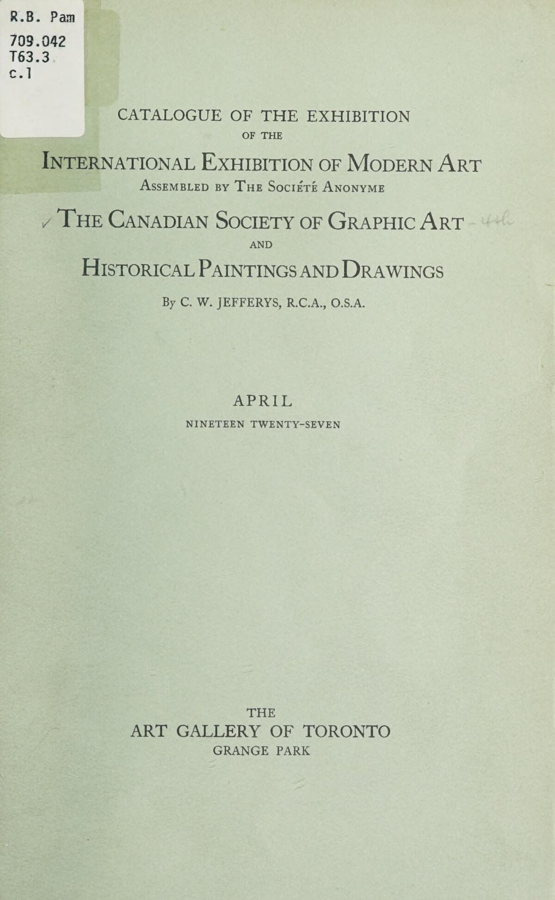
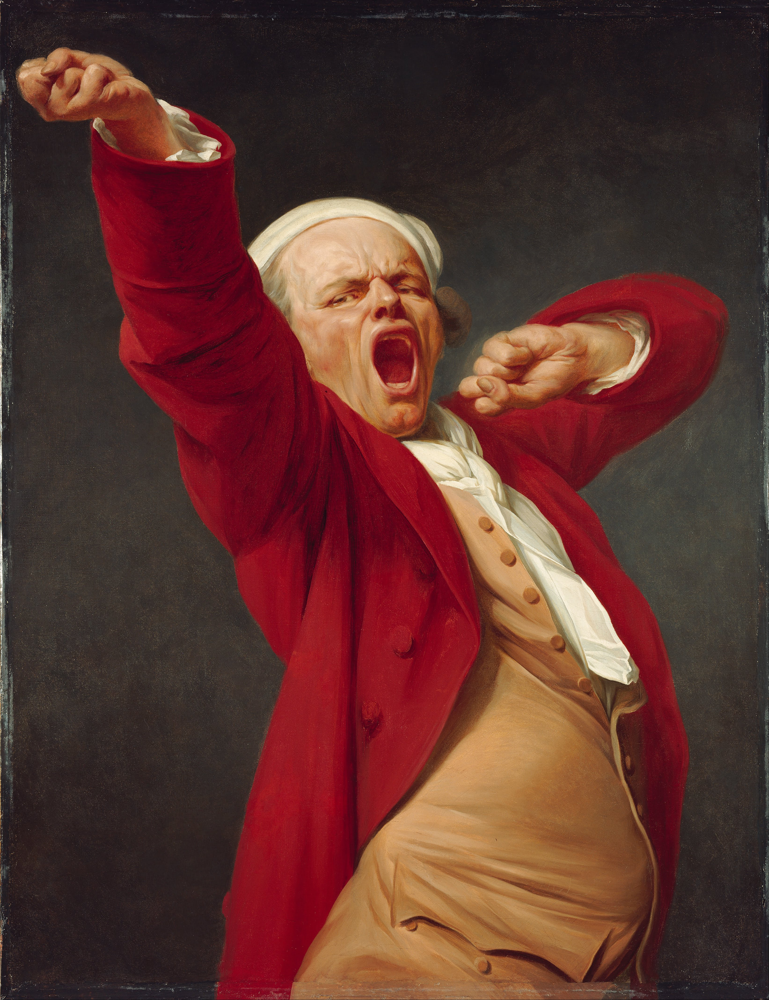
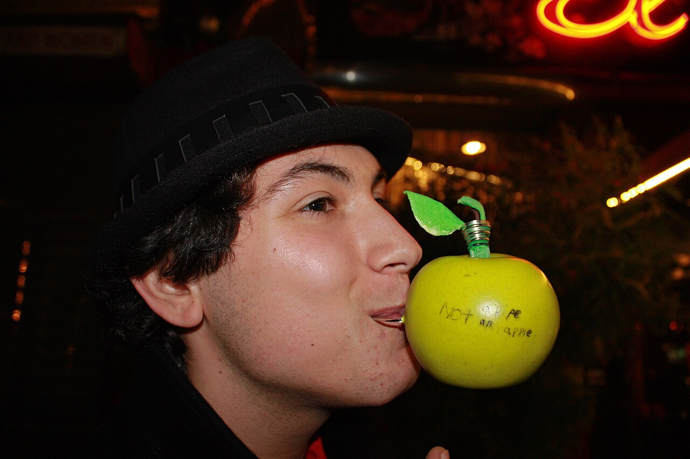

Meesterwerk: De Permanente van de Herinnering
Salvador Dalí, 1931

⚜️ UITGEBREIDE STIJLFIGUREN
🎨 DROOMLOGICA
Realistisch + Onmogelijk: Objecten worden hyper-realistisch geschilderd, maar geplaatst in onmogelijke combinaties en situaties. De techniek is klassiek, de inhoud is gek.
Verstoorde schaal: Gigantische objecten naast minuscule figuren. Proporties die veranderen binnen één werk.
🔗 Tijdsgeest Connecties
Psychologie: Freud's droomanalyse - de "koninklijke weg naar het onderbewuste"
Politiek: Weigering van burgerlijke rationaliteit - kunst als subversie
Filosofie: Het onbewuste als bron van hogere waarheid boven de ratio
Historie: WOI trauma maakt "beschaafde" rationaliteit ongeloofwaardig
🧠 HET ONDERBEWUSTE
Automatisch schrijven/schilderen: Het onderbewuste mag direct naar het doek, zonder censuur van de ratio. Dit leidt tot vreemde associaties en onverwachte beelden.
Freudiaanse invloed: Dromen, verdrongen verlangens, seksualiteit, angsten - alles mag op tafel.
🔗 Tijdsgeest Connecties
Psychologie: Freud's "Die Traumdeutung" (1900) - verdringing, driften, het id
Politiek: Bevrijding van seksuele moraal - anti-bourgeois revolutie
Filosofie: Nietzsche's Dionysische vs Apollinische - driften boven ratio
Historie: WOI toont dat "beschaving" een dun laagje is over primitive driften
✨ HYPER-REALISME
Academische precisie: In tegenstelling tot het losse Expressionisme, is Surrealisme vaak extreem gedetailleerd. Elk haar, elke schaduw klopt.
Illusie van werkelijkheid: De kijker wordt verleid om het beeld te geloven, waardoor de onmogelijkheid des te harder aankomt.
🔗 Tijdsgeest Connecties
Psychologie: Het "uncanny" (unheimlich) - het vertrouwde dat vreemd wordt
Politiek: Ondermijning van officiële waarheden door subversieve realiteit
Filosofie: Plato's schaduw op de grotwand - wat is echte werkelijkheid?
Historie: Fotografie maakt realisme overbodig - kunst moet fotografie overtreffen
🔮 SYMBOLISME
Persoonlijke iconografie: Elke kunstenaar ontwikkelt eigen symbolen. Dalí heeft zijn smeltende klokken, Ernst zijn vogel-mens, Kahlo haar wenkbrauwen.
Mythen en archetypen: Narcissus, Oedipus, engelen en demonen - klassieke verhalen krijgen nieuwe betekenis.
🔗 Tijdsgeest Connecties
Psychologie: Jung's archetypen - collectief onderbewuste als bron van symbolen
Politiek: Mythen als subversieve tegenhanger van officiële geschiedenis
Filosofie: Symbolisme als toegang tot hogere, niet-rationele kennis
Historie: WOI vernietigt vertrouwen in vooruitgang - terug naar eeuwige mythen
🔗 TIJDSGEEST CONTEXT (1924-1966)
🏛️ POLITIEK PERSPECTIEF: Tussen de twee wereldoorlogen broeit het extremisme. Het fascisme (Mussolini, 1922; Hitler, 1933) dreigt en vervolgt "ontaarde kunst". De Spaanse Burgeroorlog (1936-1939) verdeelt de intellectuelen - Picasso's "Guernica" is een surrealistisch-politiek statement. Breton's Surrealistische beweging is expliciet links, anti-kapitalistisch, revolutionair. Velen vluchten naar Amerika tijdens WOII (Dalí, Ernst, Breton), waar ze de Amerikaanse kunst beïnvloeden. De Koude Oorlog en de dreiging van atoomverwoesting maken het absurde tot politieke realiteit.
📚 LITERAIR PERSPECTIEF: Breton's "Manifeste du surréalisme" (1924) en "Nadja" (1928) definieert automatisch schrijven en de verovering van het onderbewuste. Louis Aragon en Paul Éluard combineren politiek engagement met lyrisme. Magisch realisme (Borges, Cortázar, Márquez) groeit organisch uit het surrealisme. De "black humor" (Ionesco, Beckett) ontwikkelt zich als coping tegen de waanzin van de geschiedenis. De beat generation (Ginsberg, Kerouac) adopteert surrealistische technieken voor Amerikaanse bodem.
🧠 PSYCHOLOGISCH PERSPECTIEF: Freud's "Die Traumdeutung" (1900) en "Das Ich und das Es" (1923) leggen het onderbewuste bloot. Dromen, vrije associatie, verdringing, het id - de mens is niet rationeel maar een speelbal van driften. Jung's archetypen (collectief onderbewuste) bieden een alternatief. Het "uncanny" (unheimlich - Freud, 1919) verklaart het verontrustende in surrealistische beelden: het vertrouwde dat vreemd wordt. Lacans psychoanalyse (spiegelstadium, 1936) benadrukt de gefragmenteerde identiteit.
⚙️ HISTORISCH PERSPECTIEF: WOI (1914-1918) toont dat de "beschaafde" wereld een illusie is - rationaliteit leidt tot massaslachting. Dadaïsme (1916-1924) is de onmiddellijke voorloper. De Grote Depressie (1929) toont het falen van kapitalisme. WOII brengt Holocaust en atoombom - de vernietiging van onschuld. De consumentenmaatschappij wordt dominant (reclame, cinema). De koloniale rijken vallen uiteen. Fotografie en film maken realistische nabootsing overbodig - kunst moet nieuwe werkelijkheden creëren.
🎭 FILOSOFISCH PERSPECTIEF: Hegel's dialectiek wordt herlezen via Marx - het surrealisme wil bevrijding van de mens door bevrijding van de geest. Nietzsche's kritiek op ratio en zijn Dionysische esthetiek zijn fundamenteel. Sartre's existentialisme ("L'Être et le Néant", 1943) benadrukt individuele vrijheid en de absurditeit van bestaan. Wittgenstein's taalfilosofie ("Tractatus", 1921) verwijst naar de grenzen van de ratio - sommige dingen kunnen alleen getoond, niet gezegd. Bataille's "l'expérience intérieure" (1943) verkent extase en transgressie.
🎨 TIEN MEESTERWERKEN - GEDETAILLEERDE ANALYSE
1. "De Permanente van de Herinnering" (1931) — Salvador Dalí
MoMA, New York · 24 × 33 cm · Olieverf op doek
Achtergrond: Een van Dalí's meest bekende werken, geschilderd in slechts enkele uren. Het landschap is geïnspireerd op de rotsen van Cap de Creus in Catalonië. Dalí noemde het "handgeschilderde droomfoto's".
🔍 STIJLANALYSE
Hyper-realistische techniek: Elk detail is perfect - de schaduwen, de textuur van de rotsen, de reflecties. Dalí gebruikt oude meestertechnieken (glaceren, onderverven) voor een hallucinatoir effect.
Smeltende tijd: De klokken zijn zacht, vloeibaar, als kaas. Dit is geen mechanische tijd maar psychologische tijd - hoe tijd voelt in een droom of bij verveling. Einstein's relativiteitstheorie als poëtisch beeld.
Verstoorde schaal: Het landschap is oneindig, leeg. Het enige menselijke element is het bizarre, antropomorfe figuur in het midden - slapend? dood? dromend?
Symboliek: De hardheid van de rotsen versus de zachtheid van de klokken. Tijd verliest zijn rigide structuur in het onderbewuste. De vliegen suggereren verval.
Dalí's methode: Paranoïaque-kritieke methode - bewustzijn verdubbelen om hallucinaties te produceren. Dalí zocht naar "handgeschilderde droomfoto's".
2. "De Verraad der Beelden" (1929) — René Magritte
LACMA, Los Angeles · 63 × 94 cm · Olieverf op doek

Achtergrond: Waarschijnlijk het meest besproken Surrealistische werk. De tekst "Ceci n'est pas une pipe" (Dit is geen pijp) lijkt absurd, maar is logisch: het is een schilderij van een pijp, geen pijp zelf.
🔍 STIJLANALYSE
Taal vs. Beeld: Magritte onderzoekt de relatie tussen representatie en realiteit. De pijp lijkt echt, maar de tekst ontkent dit. Waarheid is een constructie.
Minimalisme: Geen decor, geen context, geen diepte. Witte achtergrond, alleen de pijp en de tekst. Dit maakt de paradox scherper - er is niets om afleiding te bieden.
Techniek: Zeer glad, reclame-achtig. Magritte werkte korte tijd als reclametekenaar en die invloed is zichtbaar. Het is bijna illustratief, niet "artistiek".
Filosofische implicaties: Dit werk is een voorloper van de taalfilosofie van Wittgenstein en de deconstructie van Derrida. Een beeld is nooit "gewoon" een beeld.
Versus Dalí: Waar Dalí dromen schildert, schildert Magritte filosofie. Beiden zijn Surrealisten, maar met totaal verschillende benaderingen.
3. "Harlequin's Carnival" (1924-1925) — Joan Miró
Albright-Knox Art Gallery, Buffalo · 66 × 93 cm · Olieverf op doek

Achtergrond: Miró's doorbraak naar zijn kenmerkende stijl. De titel verwijst naar het carnaval in Barcelona, maar ook naar de Commedia dell'arte figuur Harlekijn. Het werk is een explosie van vreugde en absurditeit.
🔍 STIJLANALYSE
Automatisme: Miró begon met vlekken en lijnen, zonder plan. De vormen "werden" figuren tijdens het proces. Dit is pure Surrealistische methode - het onderbewuste bepaalt.
Biomorfische vormen: Organische, levende vormen die niet menselijk maar wel levend lijken. Spermacellen, micro-organismen, embryo's - het leven op cellulair niveau.
Kleur: Primaire kleuren (rood, blauw, geel) en zwart. Kinderlijk, speels, bijna kindertekening-achtig. Maar de compositie is volwassen en doordacht.
Symbolen: De ladder (ascensie), de cijfers (tijd), de dierlijke oren (instinct). Miró creëert een persoonlijk alfabet van tekens.
Ruimte: Geen diepte, geen perspectief. Alles zweeft in een indefinieerbare ruimte - zoals in een droom waar zwaartekracht niet bestaat.
4. "Pietà of Revolutie bij Nacht" (1923) — Max Ernst
Tate Modern, Londen · 116 × 89 cm · Olieverf op doek

Achtergrond: Geschilderd kort na de Duitse Revolutie van 1918-1919. De titel verwijst naar de katholieke pieta (Maria met dode Christus), maar hier is het een vaderfiguur met een zoon. Ernst's relatie met zijn eigen vader was problematisch.
🔍 STIJLANALYSE
Frottage: Ernst's uitvinding - wrijven met potlood over textuur (hout, stof, etc.) om patronen te creëren. De vloer is zo gemaakt. Dit brengt het toeval binnen - het onderbewuste kiest.
Oedipale thematiek: De grote, angstaanjagende vaderfiguur. De zoon die wordt vastgehouden of geknield wordt gedwongen. Freud's Oedipus-complex als visueel drama.
Kleuren: Donker, somber. Bruin, grijs, groen - de kleuren van angst en onderdrukking. Alleen het rode gordijn biedt een vlek van passie/geweld.
Architectuur: De kamer is een gevangenis. Deuren die nergens heen leiden. Ernst's obsessie met gesloten ruimtes en nachtmerries.
5. "Het Grote Bos" (1927) — Max Ernst
Kunstsammlung Nordrhein-Westfalen, Düsseldorf · 114 × 146 cm · Olieverf op doek

Achtergrond: Ernst's "bos" werken zijn onderdeel van een reeks waarin de natuur dreigend en mystiek wordt. Het bos is niet romantisch (zoals bij de Romantici) maar angstaanjagend - een plek van verdwalen en verlies.
🔍 STIJLANALYSE
Decalcomanie: Verf opplakken en afdrukken - het omgekeerde van schilderen. Dit creëert organische, onvoorspelbare patronen die op bomen lijken.
Verstoorde schaal: De bomen zijn enorm, de mensen minuscuul. De natuur overweldigt de mens. Dit is Romantiek omgedraaid: de natuur is niet verheven maar bedreigend.
Licht: Diffuus, maanachtig. Er is geen zon, geen warmte. Het bos leeft in een eeuwige schemering. Ernst's nachtmerrie-esthetiek.
Mythisch: Het bos als archetypische plek van dreiging (sprookjes, Germaanse mythologie). Ernst haalt uit de collectieve onbewuste.
6. "Zelfportret met Doornenketting en Kolibrie" (1940) — Frida Kahlo
Harry Ransom Center, Austin · 63 × 49 cm · Olieverf op doek

Achtergrond: Geschilderd na haar scheiding van Diego Rivera. De doornenketting verwijst naar de kroon van doornen, maar ook aan haar pijn na de ontrouw van Diego. De kolibrie is een Mexicaans symbool van liefde en hoop.
🔍 STIJLANALYSE
Naïef realisme: Kahlo's stijl is beïnvloed door Mexicaanse volkskunst (retablos). Geen perspectief, vlakke kleuren, directe blik. Maar het is doordacht naïef - elk element is symbool.
Symboliek: De doornenketting die bloedt (zelfopofferend liefdesverdriet), de aap (listigheid, ook deeltje van de ziel in Mexicaanse folklore), de kolibrie (onmogelijke liefde), de zwarte kat (onheil).
Kleur: Levendig groen (jungle, groei), fel rood (bloed, passie), geel (zon, leven). Kahlo's palet is Mexicaans - verwant aan haar identiteit.
Wenkbrauwen: Kahlo's handelsmerk - samengegroeid tot één lijn. Symbool van haar weigering om Europese schoonheidsidealen te volgen. Ze is trots op haar "mannelijke" kenmerken.
Surrealisme?: Kahlo weigerde het label "Surrealiste". Zij zei: "Ik schilder mijn realiteit, niet mijn dromen." Haar leven was surrealistisch genoeg.
7. "De Metamorfose van Narcissus" (1937) — Salvador Dalí
Tate Modern, Londen · 51 × 78 cm · Olieverf op doek

Achtergrond: Dalí's interpretatie van de Griekse mythe. Narcissus verliefd op zijn eigen spiegelbeeld, verandert in een narcis (bloem). Dalí voegt dubbele beelden toe - het verhaal wordt visueel raadsel.
🔍 STIJLANALYSE
Dubbelbeeld: Links de knielende Narcissus, rechts de hand die een ei vasthoudt (nieuw leven, transformatie). Twee momenten in één beeld - tijd is opgeheven.
Hand met ei: Typisch Dalíaans symbool - het ei als perfecte vorm, geboorte, potentie. De vingers lijken op de kliffen op de achtergrond - alles is vervormd.
Landschap: Het Catalaanse landschap (Cap de Creus) met surrealistische toevoegingen. Het water is spiegelglad - Narcissus kan zich blijven bewonderen.
Techniek: Glad, bijna emaille-achtig. Dalí noemde dit zijn "paranoïaque-kritieke methode" - systematische verwarring creëren.
8. "De Zoon van de Mens" (1964) — René Magritte
Privécollectie · 116 × 89 cm · Olieverf op doek

Achtergrond: Een van Magritte's laatste werken, en een van zijn bekendste. De man in het bolhoedje is Magritte zelf (hij droeg vaak een bolhoed). De appel verwijst naar het paradijs, maar ook naar het verbergen van het gezicht.
🔍 STIJLANALYSE
Verborgen identiteit: Het gezicht is onzichtbaar achter de appel. Wie is de man? Magritte? Iedereen? De appel (tentatie, kennis) verhindert dat we de persoon zien.
De zee: Achter de man is een muur, daarachter de zee. Het is een typisch Magritte-scène: onmogelijke architectuur, geen logische diepte.
Stijl: Hard-edge, glad, reclame-achtig. Geen penseelstreken zichtbaar. Magritte wil dat het beeld "neutraal" is - de inhoud moet schokken, niet de stijl.
Christelijke verwijzing: "De Zoon van de Mens" is een titel die Jezus voor zichzelf gebruikte. Is dit een moderne christus? Of een ironische commentaar?
9. "Zachte Constructie met Gekookte Bonen" (1936) — Salvador Dalí
Philadelphia Museum of Art · 100 × 99 cm · Olieverf op doek

Achtergrond: Geschilderd tijdens de Spaanse Burgeroorlog. Het lichaam dat zichzelf verscheurt is een allegorie van Spanje dat zichzelf vernietigt. De titel verwijst naar "premonitie" - Dalí voorspelde de oorlog.
🔍 STIJLANALYSE
Vlezige horror: Het lichaam is zacht, vloeibaar, als gesmolten kaas. Ledematen worden uit elkaar getrokken, maar het is geen bloed - het is vlees dat zichzelf verslindt.
Bonenthema: De bonen verwijzen naar het Spaanse volksreferendum. Dalí zag de politieke chaos als een monster dat zichzelf opeet.
Landschap: Verlaten, troosteloos. De klassieke Dalí-elementen: rotsen, wolken, verstoorde schaal. De natuur getuigt van de menselijke waanzin.
Politieke kunst: Zeldzaam voor Dalí, die meestal apolitiek was. De oorlog in zijn vaderland trof hem diep - ook al bleef hij neutraler dan veel andere kunstenaars.
10. "De Week van de Rouw" (1940) — Max Ernst
Galleria Nazionale d'Arte Moderna, Rome · 130 × 163 cm · Olieverf op doek

Achtergrond: Geschilderd in de nasleep van WII, toen Ernst vluchtte voor de nazi's (hij was Duits, maar als "ontaarde" kunstenaar gebrandmerkt). De vogel-mens figuren zijn Loplop, Ernst's alter ego.
🔍 STIJLANALYSE
Grattage: Krassen in natte verf om textuur te creëren. Ernst ontwikkelde deze techniek als alternatief voor het Duitse schilderen - het toeval creëert, niet de wil.
Loplop: De vogel-mens die als Ernst's alter ego fungeert. Vogels zijn vrij, maar ook kwetsbaar. Loplop observeert, commenteert, lijdt mee.
Apocalyptisch: De hemel is vuur, de aarde is scheuren. Het is het einde van de wereld, maar ook de geboorte van iets nieuws. Ernst's optimisme ondanks alles.
Kleur: Donker, maar met vlekken licht. Ernst's late stijl is kleurrijker dan zijn vroege werk - alsof de oorlog hem paradoxaal genoeg hoop gaf.
📚 CONCLUSIE: DE DROOM WORDT WAAR
Het Surrealisme toont ons:
- Dat de ratio liegt: Het onderbewuste kent waarheden die het bewustzijn verdringt
- Dat kunst filosofie kan zijn: Magritte's pijp is belangrijker dan veel filosofische traktaten
- Dat persoonlijk universeel is: Kahlo's pijn spreekt iedereen aan
- Dat techniek emotie dient: Dalí's perfectie maakt zijn nachtmerries erger
- Dat het toeval helpt: Ernst's frottage en grattage laten het onderbewuste spreken
De droom wordt wakker - en wij met haar.